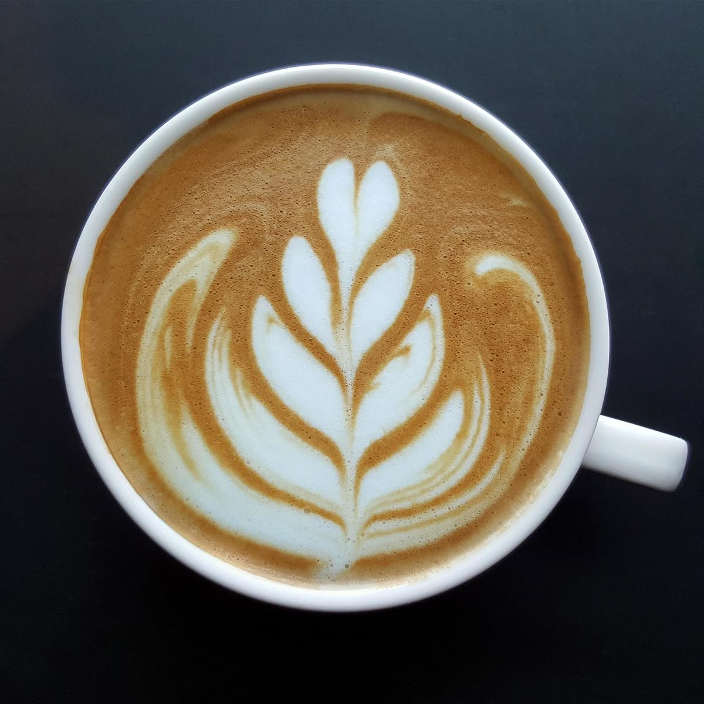
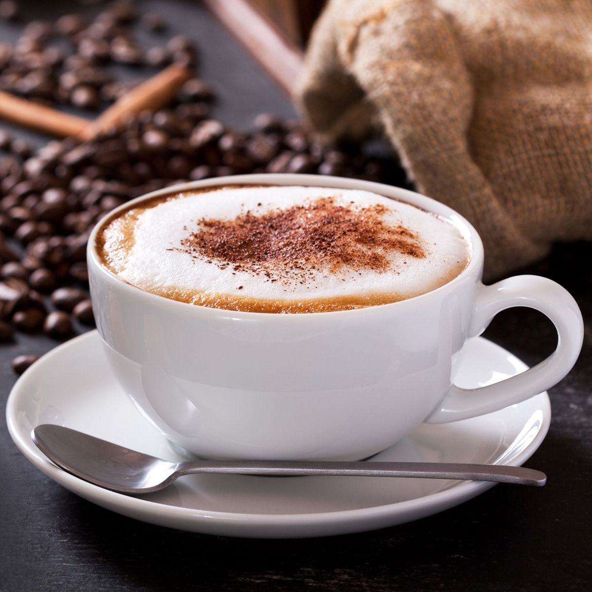
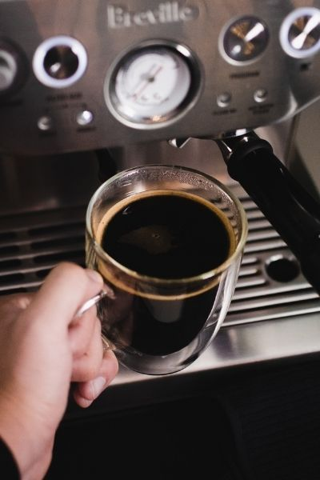
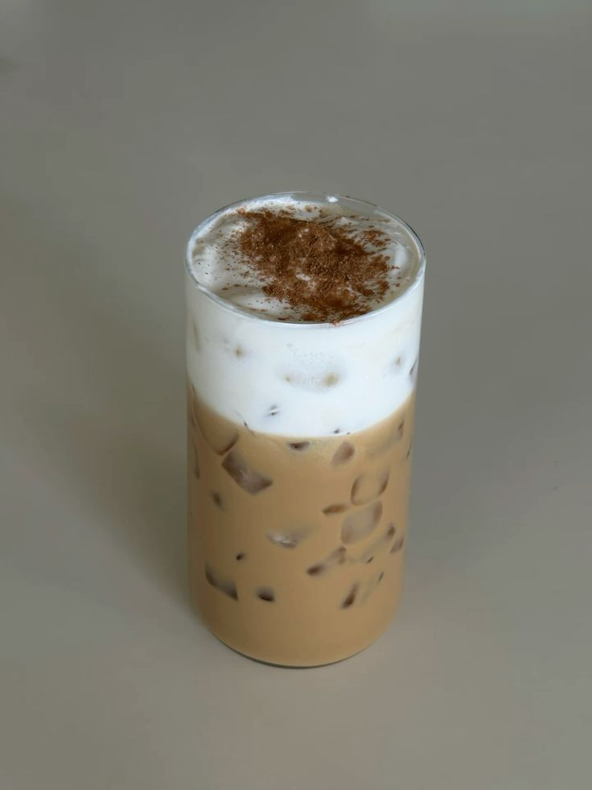

| Gambar | Nama Menu | Harga |
|---|---|---|
 |
Espresso kuat, pekat, dan intens dengan perpaduan rasa pahit, manis, dan asam yang seimbang. |
Rp 25.000 |
 |
Latte lembut, creamy, dan milky dengan keseimbangan antara rasa espresso yang kaya dan susu yang dominan. |
Rp 30.000 |
 |
Cappuccino Rasa cappuccino lembut, creamy, dengan pahit kopi yang ringan. |
Rp 32.000 |
 |
Americano ringan, bersih, dan tidak sepekat espresso murni, dengan keseimbangan antara rasa pahit dan sedikit asam. |
Rp 28.000 |
 |
Butterscotch Latte manis, gurih, dan creamy dengan aroma karamel yang kaya, hasil dari campuran espresso pahit dengan saus butterscotch | Rp 22.000 |
 |
Mocchacino | Rp 22.000 |